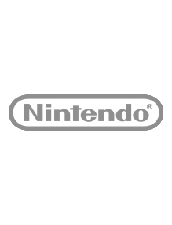

|  |
| Developer Name: |
Naughty Dog |
| Description: |
Nintendo Co., Ltd. is a Japanese multinational consumer electronics and video game company headquartered in Kyoto, Japan. Nintendo is one of the world's largest video game companies by market capitalization. Founded on 23 September 1889 by Fusajiro Yamauchi, it originally produced handmade hanafuda playing cards. By 1963, the company had tried several small niche businesses, such as cab services and love hotels. The word Nintendo can be roughly translated from Japanese to English as "leave luck to heaven". Abandoning previous ventures in favor of toys in the 1960s, Nintendo then developed into a video game company in the 1970s, ultimately becoming one of the most influential in the industry and Japan's third most-valuable company with a market value of over $85 billion. |
| City: |
Kyoto |
| Country: |
Japan |
| Established: |
1889 |
|